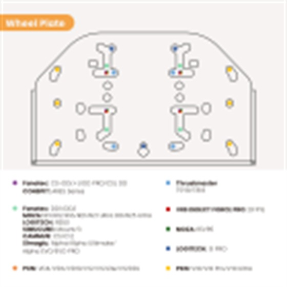
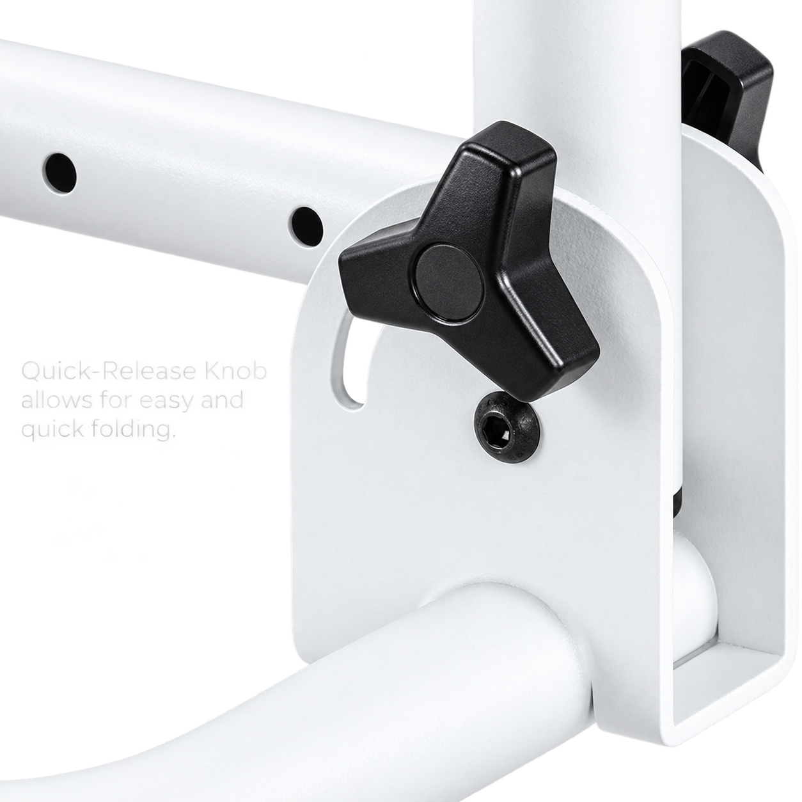
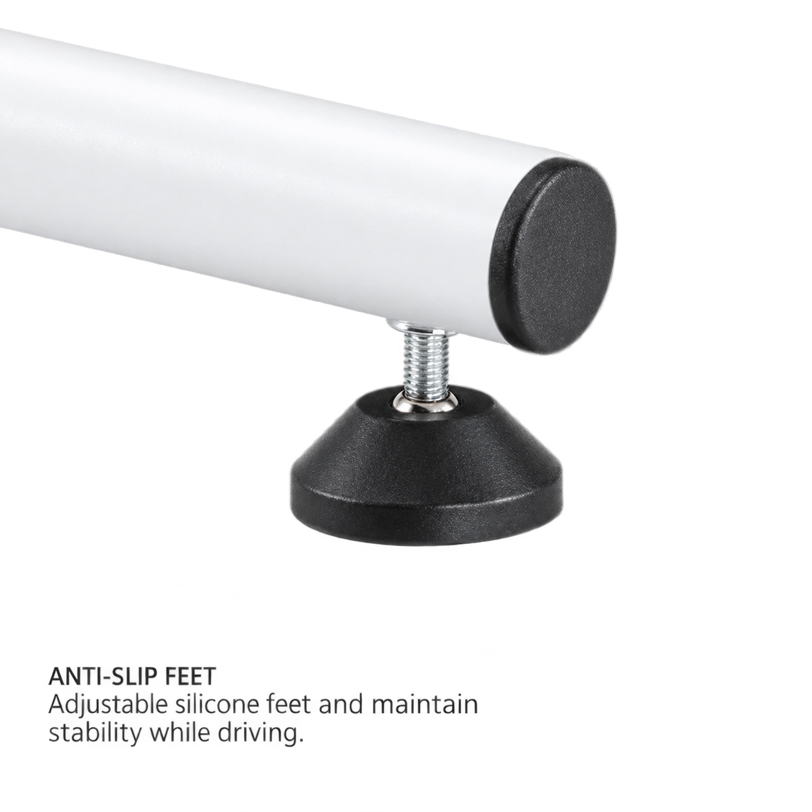
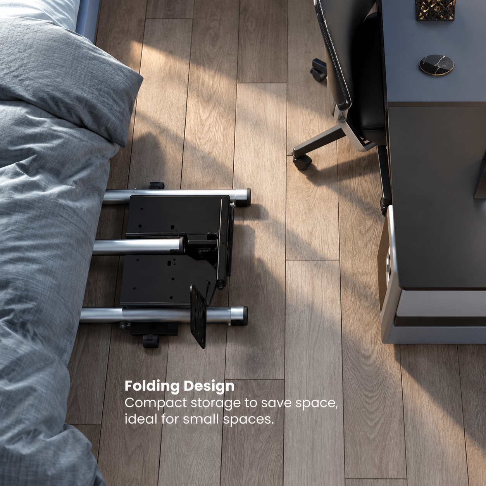

01 / Volante
Placa para Volante Ajustable
Se ajusta hacia arriba, abajo, adelante y atrás para llevar el volante a tu posición.
Cockpit / Plegable
Una estación compacta para entrar a la pista, ajustar tu posición y guardar el equipo cuando termina la carrera.
Explorar ficha técnica
Un cockpit que se adapta
El marco de acero reúne volante y pedales en una posición estable. Al terminar, su diseño plegable libera tu espacio sin desmontar toda la experiencia.
Video de referencia
Construido para tu posición

Se ajusta hacia arriba, abajo, adelante y atrás para llevar el volante a tu posición.

Recubrimiento en polvo de alta calidad para evitar arañazos y óxido.

Protegen el suelo de arañazos causados por movimientos y vibraciones del juego.

Se guarda fácilmente cuando no estás corriendo y libera el espacio de tu habitación.
Ficha técnica
La placa para pedal permite una posición inclinada y ajuste hacia adelante o atrás para encontrar un apoyo más cómodo.
| Categoría de producto | Soporte para volante de simulador de carreras |
|---|---|
| Nivel | Económico |
| Dimensiones | 522x831x815mm (20.6"x32.7"x32.1") |
| Capacidad de peso | 20kg (44lbs) |
| Tipo de marco | Marco plegable |
| Material de marco | Acero |
| Acabado superficial | Recubrimiento de polvo |
| Color de marco | Textura fina negro, textura fina blanco y textura fina negro |
| Inclinación del panel del volante | -30° / -15° / 0° / +15° / +30° |
| Inclinación del panel de pedales | 0° / 15° / 27° |
| Gestión de cable | Sí |
| Paquete de accesorios | Bolsa de plástico normal / Ziplock |